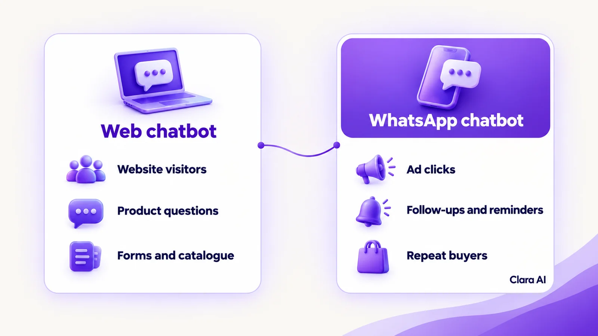
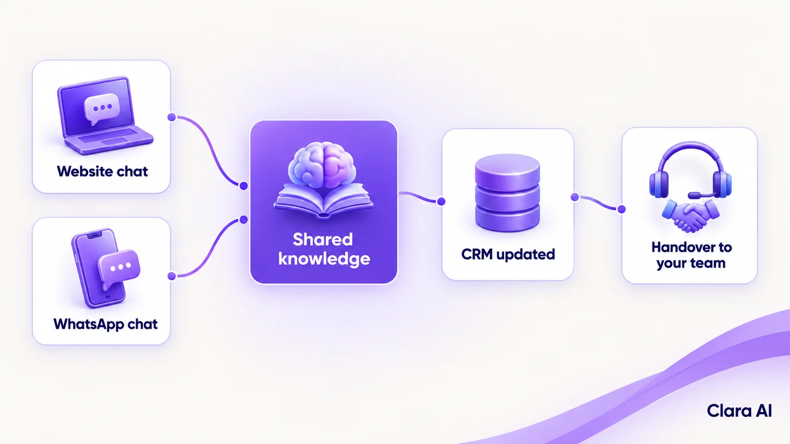

A web chatbot answers visitors on your website. A WhatsApp chatbot talks to customers in their messaging app and can follow up later. Web suits browsing and product questions. WhatsApp suits ad clicks, reminders and repeat buyers. Many European businesses use both, sharing one set of answers.
A visitor from Madrid reads a product page. She has one question about delivery. Nobody answers, so she leaves. Another person taps an Instagram ad that opens WhatsApp. He gets a reply in seconds and agrees a call. Same business, same week, two channels, two very different outcomes.
This guide compares the two for European businesses. It explains what each does, where each works best, where each falls short and how to choose.
A web chatbot is an assistant that sits on your website and chats with visitors in a window on the page. It answers from content you have approved: products, services, delivery, opening hours and availability. It can also ask a few questions, capture contact details and pass the visitor to your team.
The visitor needs nothing but a browser. There is no app to install, no number to save and no account to create. That makes it the simplest way to help someone who is already on your site with a question they might not bother to email.
Clara AI builds this as an AI web chatbot.
A WhatsApp chatbot chats with customers inside WhatsApp, using your business number. It runs on the WhatsApp Business Platform, the route WhatsApp provides for businesses to automate messaging, usually set up through a provider.
Customers start the chat themselves. They tap a click-to-WhatsApp ad, scan a QR code or message your number. Two rules shape how it works:
Clara AI builds this as a WhatsApp chatbot for business.
WhatsApp is a common way to message businesses in many European countries, but habits differ by country and age group. Check your own customers before you decide.
A web chatbot works best when:
A WhatsApp chatbot works best when:

A web chatbot is tied to the page. When the tab closes, the chat ends. Unless the visitor leaves an email address or number, you cannot continue the conversation. It also reaches only people who visit your site.
A WhatsApp chatbot depends on permission and rules.
Neither weakness is a reason to avoid the channel. Each is a reason to design it carefully.
Good design closes most of these gaps. On the web, the chatbot can offer to send a quote, a brochure or a callback, so the visitor has a reason to leave contact details before the tab closes. On WhatsApp, follow-ups work best when they are useful rather than pushy: a reminder the customer asked for, a reply to an open question or a short update on an order. Each message should be easy to stop, and the customer should always be able to reach a person.
| Web chatbot | WhatsApp chatbot | |
|---|---|---|
| Where the chat starts | On your website | In WhatsApp, often from an ad, QR code or link |
| Can you message the lead later? | Only if they leave contact details | Yes, within the 24-hour window, or with approved templates after it |
| Opt-in and rules | Tell visitors what happens with their data | Opt-in needed; approved templates outside the window |
| Best for | Browsing visitors, product and catalogue questions, forms | Ad clicks, follow-ups, reminders, repeat buyers |
| Main weakness | Chat ends when the tab closes | Needs permission and approved message templates |
| Setup effort | Lower: a chat window on your site and approved content | Higher: WhatsApp Business Platform access, a business number and approved templates |
| Handover to a person | Live transfer or a callback request, with the chat attached | Same, inside the WhatsApp thread |
| What you need to run it | Website access, approved content, a CRM or inbox | WhatsApp Business Platform access, approved templates, consent records, a CRM or inbox |
The table shows that the two are not rivals. They catch leads at different moments.
A lead rarely stays in one channel. Someone reads a page, asks a question in web chat and leaves a number. Days later, they receive a reminder on WhatsApp. If each channel has its own assistant, the answers differ, the records split and your team has to piece the story together.
One shared brain removes that problem. It means three things:

The web chatbot captures the visitor, with consent. WhatsApp then carries the follow-up within the rules. You do not have to launch both at once. Most teams start with one channel and add the other when the first is working.
Work through these steps in order.
If most leads come from your website, start with web. If your ads open WhatsApp, start there. If both are true, plan both and launch one first. Our guide to how chatbot cost is worked out explains what drives the scope.
Three common patterns show how this plays out:
Whichever you pick first, write down what success looks like before launch, such as faster first replies or more enquiries that become conversations, so you can judge the result against how things work today.
On both channels, the chatbot handles routine questions and capture. People handle:
The handover is designed first, not added later. Your staff receive the full conversation, so the customer never repeats themselves. Your team also reviews chats regularly. Where the chatbot struggled, the answers or rules are corrected.
Both channels handle personal data, so the GDPR matters. In general terms: collect only what you need, tell people what happens with their data, get consent before marketing messages, and let people opt out easily. The chatbot should say it is an automated assistant. This is a general note, not legal advice. Your legal or data-protection adviser decides what applies to your business, and we build to those decisions.
Clara AI has built both kinds of chatbot. Apex Hospitals uses a WhatsApp chatbot for patient queries and appointments. Clara AI also built a web chatbot for Tempsens, an industrial manufacturer, that answers product catalogue questions. You can read more in our guide to an AI web chatbot for industrial product catalogue support, and see our client work.
We publish no results for either here, so treat them as examples of the two channels, not as forecasts for your market.
Some leads prefer to talk. An AI calling agent can phone people who have enquired, using the same approved answers, and write the outcome to the same record.
An operations intelligence dashboard shows where leads start, how quickly each gets a first reply, which questions the chatbot could not answer and how many handovers each channel creates. It tells you where to invest next.
Clara AI's chatbots and calling agents work in English and Hindi. Other languages for your markets are confirmed during diagnosis and tested before launch. We build web and WhatsApp as one assistant, through our AI chatbots service, in six steps.